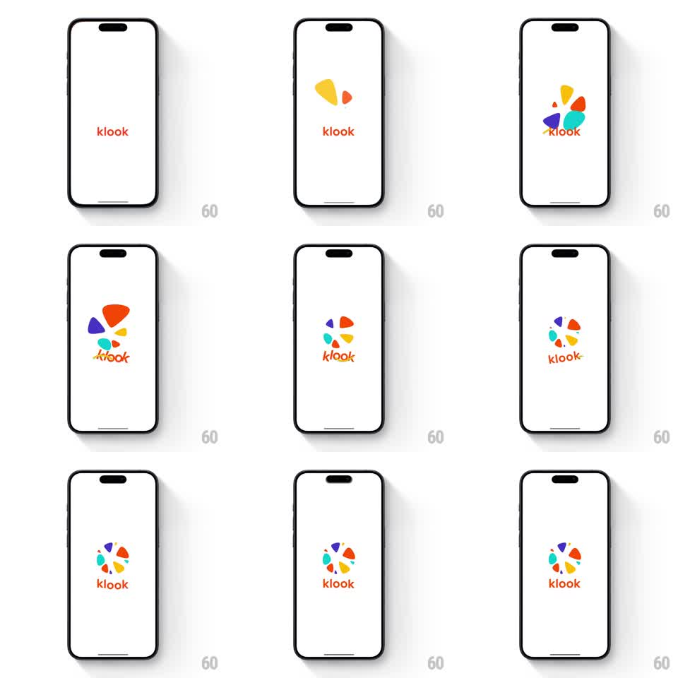

Media
Frame-by-frame

Rebuild this animation 1:1: Klook's splash - on a white screen, scattered colorful petal shapes fly in, spin, and assemble into the circular pinwheel logo above the orange "klook" wordmark.

Rebuild this animation 1:1: Klook's splash - on a white screen, scattered colorful petal shapes fly in, spin, and assemble into the circular pinwheel logo above the orange "klook" wordmark. ## Integration Integration: stack-agnostic spec - springs given as stiffness/damping, timed motions as duration + curve; map every value to your framework and animation library of choice. ## Scene White screen. Small orange "klook" wordmark lower-center. Above it, five rounded petal/teardrop shapes (yellow, orange, red, teal, purple) start scattered and oversized, then gather and arrange into a circular pinwheel - the Klook logo mark. ## Motion spec Pattern: scatter-to-mark logo assembly. - The wordmark fades in first (200ms) and holds. - Petals enter from off-center positions, oversized (scale ~1.6) and rotated randomly; each travels to its slot in the circle with a spring (stiffness ~260, damping ~22), rotating upright as it lands, 60ms stagger between petals. - Once assembled, the pinwheel does a gentle celebratory spin (rotate ~30deg and settle back, spring ~200/18) and a subtle scale pulse (1.0 to 1.05 to 1, 300ms). - The assembled logo holds with a slow idle rotation drift (+-3deg, 3s) until the app loads, then the whole composition scales up slightly and crossfades into the home screen (300ms). ## Calibration - Petals must land in pinwheel order around the circle - wrong adjacency breaks the mark. - The spin is a settle, not a rotation loop; the logo ends static and crisp. ## Reduced motion Petals fade in place; no spin. ## Don't miss - Petals are rounded teardrops with their points toward center, small gaps between them - not a solid disc. - Wordmark stays orange and static throughout; only the petals move.